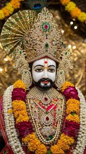
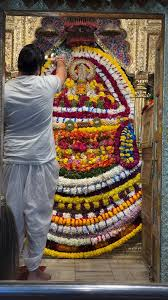
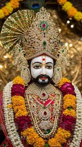
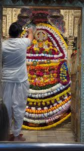

Shri Khatu Shyam Ji, lovingly known as Shyam Baba, is the divine manifestation of Barbarika, the grandson of Bhima from the Mahabharata.
Barbarika possessed three divine arrows that could decide the fate of any battle. To preserve cosmic balance, Lord Krishna requested his head as charity, which Barbarika offered with complete devotion.
Impressed by this supreme sacrifice, Krishna blessed Barbarika to be worshipped in the Kali Yuga as Shyam — the protector of the weak, the defeated and the suffering.
The sacred head was later discovered in Khatu, Rajasthan, where the famous Khatu Shyam Temple stands today, drawing millions of devotees every year.
Devotees believe Shyam Baba grants peace, healing, financial stability and spiritual protection to all who approach him with sincere faith.
Mantra: Om Shri Shyam Devaya Namah